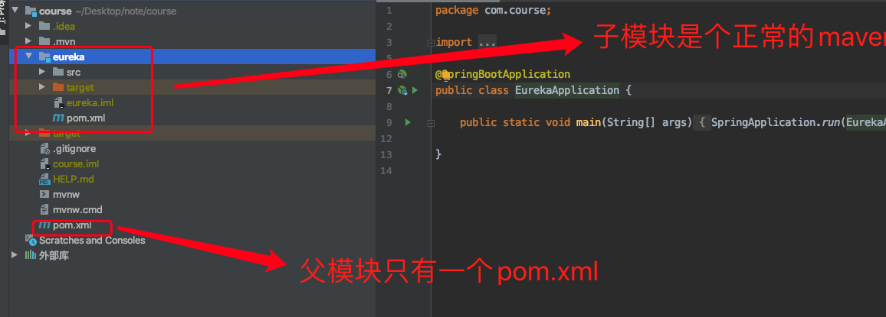

<!DOCTYPE html>
<html lang="zh-CN">
<head><meta name="generator" content="Hexo 3.9.0">
  <meta charset="utf-8">
  <meta content="width=device-width, initial-scale=1.0, maximum-scale=1.0, user-scalable=0" name="viewport">
  
  <title itemprop="name">spirngboot 视频项目学习笔记(1) | lovelves</title>
  
    <link rel="shortcut icon" href="/images/favicon.ico">
  
  <meta http-equiv="x-dns-prefetch-control" content="on">
  <link rel="stylesheet" href="https://fonts.googleapis.com/css?family=Noto+SerifMerriweather|Merriweather+Sans|Source+Code+Pro|Ubuntu:400,700|Noto+Serif+SC" media="all">
  <link rel="dns-prefetch" href="//cdn.jsdelivr.net">
  <link rel="stylesheet" id="saukra_css-css" href="/css/style.css" type="text/css" media="all">
  <link rel="stylesheet" href="/css/lib.min.css" media="all">
  <link rel="stylesheet" href="/css/font.css" media="all">
  <link rel="stylesheet" href="/css/insight.css" media="all">
  <link rel="stylesheet" href="/css/jquery.fancybox.min.css" media="all">
  <link rel="stylesheet" href="/css/zoom.css" media="all">
  <link rel="stylesheet" type="text/css" href="/css/sharejs.css">
<!--   <link rel="stylesheet" id="saukra_css-css" href="https://2heng.xin/wp-content/cache/autoptimize/css/autoptimize_ad42a61f4c7d4bdd9f91afcff6b5dda5.css
" type="text/css" media="all"> -->
  <script src="https://cdn.jsdelivr.net/npm/jquery/dist/jquery.min.js"></script>
  <script type="text/javascript" src="/live2d-widget/a.js"></script>
  <script src="/live2d-widget/autoload.js"></script>
   <link rel="stylesheet" href="https://cdn.jsdelivr.net/npm/font-awesome/css/font-awesome.min.css">
  <script>
  /*Initial Variables*/
  var mashiro_option = new Object();
  var mashiro_global = new Object();
  mashiro_option.NProgressON = true;
  /* 
   * 邮箱信息之类的东西可以填在这里，这些js变量基本都作用于sakura-app.js
   * 这样的设置仅是为了方便在基于PHP开发的主题中设置js变量，既然移植到了Node上，我想或许可以精简这一逻辑吧
   */
  mashiro_option.email_domain = "";
  mashiro_option.email_name = "";
  mashiro_option.cookie_version_control = "";
  mashiro_option.qzone_autocomplete = false;
  mashiro_option.site_name = "lovelves的博客";
  mashiro_option.author_name = "的博客";
  mashiro_option.site_url = "www.lovelves.cn";
  mashiro_option.v_appId = "eBIOWlNSti1cF7QQKTdnAMF5-gzGzoHsz";
  mashiro_option.v_appKey = "vWB0QiSYnTUHzNWujmBXrXBF";
  mashiro_option.mathjax = "1";
  mashiro_option.qq_api_url = "https://api.mashiro.top/qqinfo/"; 
  mashiro_option.qq_avatar_api_url = "https://api.mashiro.top/qqinfo/";

  // mashiro_option.jsdelivr_css_src = "https://cdn.jsdelivr.net/gh/moezx/cdn@3.4.5/css/lib.min.css";
  // mashiro_option.float_player_on = true;

  /*End of Initial Variables*/
  </script>
  <script type="text/javascript">
  var bg = "https://pic4.zhimg.com/v2-7e3bd74fc2385af3251553adceec67a8_r.jpg?source=1940ef5c,https://pic4.zhimg.com/v2-23fe50c0f5c916a8a319e5afdec5b044_r.jpg?source=1940ef5c,https://pic4.zhimg.com/v2-ee4e5d2641987212a1b874fc492fc55c_r.jpg?source=1940ef5c,https://cdn.jsdelivr.net/gh/lingdas/note/img/16.jpg,https://cdn.jsdelivr.net/gh/lingdas/note/img/13.jpg,https://cdn.jsdelivr.net/gh/lingdas/note/img/10.jpg,https://cdn.jsdelivr.net/gh/lingdas/note/img/20.jpg".split(",");
  var bgindex = Math.floor(Math.random()*bg.length);
  if (!!window.ActiveXObject || "ActiveXObject" in window) { //is IE?
    alert('朋友，IE浏览器未适配哦~');
  }
  </script>
  <style type="text/css">
  .hljs-ln{border-collapse:collapse}.hljs-ln td{padding:0}.hljs-ln-n:before{content:attr(data-line-number)}
  </style>
  <style type="text/css">.site-top .lower nav{display:block !important;}.author-profile i,.post-like a,.post-share .show-share,.sub-text,.we-info a,span.sitename,.post-more i:hover,#pagination a:hover,.post-content a:hover,.float-content i:hover{color:#FE9600}.feature i,.download,.navigator i:hover,.links ul li:before,.ar-time i,span.ar-circle,.object,.comment .comment-reply-link,.siren-checkbox-radio:checked + .siren-checkbox-radioInput:after{background:#FE9600}::-webkit-scrollbar-thumb{background:#FE9600}.download,.navigator i:hover,.link-title,.links ul li:hover,#pagination a:hover,.comment-respond input[type='submit']:hover{border-color:#FE9600}.entry-content a:hover,.site-info a:hover,.comment h4 a,#comments-navi a.prev,#comments-navi a.next,.comment h4 a:hover,.site-top ul li a:hover,.entry-title a:hover,#archives-temp h3,span.page-numbers.current,.sorry li a:hover,.site-title a:hover,i.iconfont.js-toggle-search.iconsearch:hover,.comment-respond input[type='submit']:hover{color:#FE9600}.comments .comments-main{display:block !important;}.comments .comments-hidden{display:none !important;}background-position:center center;background-attachment:inherit;}
  </style>
</head>
</html>
<body class="page-template page-template-user page-template-page-analytics page-template-userpage-analytics-php page page-id-1297 chinese-font serif isWebKit">
  <div class="scrollbar" id="bar">
  </div>
  <a href="#" class="cd-top faa-float animated"></a>
  <section id="main-container">
    <div class="headertop ">
  <div id="banner_wave_1"></div>
  <div id="banner_wave_2"></div>
  <figure id="centerbg" class="centerbg">
    <div class="focusinfo no-select">
      <div class="header-tou">
        <a href="www.lovelves.cn">
          
        </a>
      </div>
      <div class="header-info">
        <p>Live your life with passion! With some drive!</p>
        <div class="top-social_v2">
          <li id="bg-pre">
            
          </li>
          
          <li id="bg-next">
            
          </li>
        </div>
      </div>
    </div>
  </figure>
  <div id="video-container" style="">
    <video style="object-fit: fill" id="bgvideo" class="video" video-name="" src="" width="auto" preload="auto">
    </video>
    <div id="video-btn" class="loadvideo videolive">
    </div>
    <div id="video-add">
    </div>
    <div class="video-stu">
    </div>
  </div>
  <div class="headertop-down faa-float animated" onclick="headertop_down()">
    <span>
      <i class="fa fa-chevron-down" aria-hidden="true">
      </i>
    </span>
  </div>
</div>
    <div id="page" class="site wrapper">
      <header class="site-header no-select gizle sabit" role="banner">
  <div class="site-top">
    <div class="site-branding">
      <span class="site-title">
        <span class="logolink moe-mashiro">
          <a href="/">
            <span class="sakurasono">lovelves</span>
            <span class="shironeko">的博客</span>
          </a>
        </span>
      </span>
    </div>
    <div class="searchbox search-form-submit">
      <i class="iconfont js-toggle-search iconsearch icon-search">
      </i>
    </div>
    <div id="show-nav" class="showNav mobile-fit">
      <div class="line line1">
      </div>
      <div class="line line2">
      </div>
      <div class="line line3">
      </div>
    </div>
    <div class="lower-cantiner">
      <div class="lower">
        <nav class="mobile-fit-control hide">
          <ul id="menu-new" class="menu">
            
              <li>
                <a href="/">
                  <span class="faa-parent animated-hover">
                    <i class="fa  fa-fort-awesome faa-shake" aria-hidden="true"></i>
                    首页
                  </span>
                </a>
                
              </li>
            
              <li>
                <a href="/archives">
                  <span class="faa-parent animated-hover">
                    <i class="fa  fa-archive faa-shake" aria-hidden="true"></i>
                    归档
                  </span>
                </a>
                
                  <ul class="sub-menu">
                    
                      <li>
                        <a href="/categories/技术/">
                          <i class="fa fa-code" aria-hidden="true"></i>
                          技术
                        </a>
                      </li>
                    
                  </ul>
                
              </li>
            
              <li>
                <a href="javascript:;">
                  <span class="faa-parent animated-hover">
                    <i class="fa  fa-list-ul faa-vertical" aria-hidden="true"></i>
                    清单
                  </span>
                </a>
                
                  <ul class="sub-menu">
                    
                      <li>
                        <a href="/booklist/">
                          <i class="fa fa-th-list faa-bounce" aria-hidden="true"></i>
                          笔记
                        </a>
                      </li>
                    
                      <li>
                        <a href="/bangumi/">
                          <i class="fa fa-film faa-vertical" aria-hidden="true"></i>
                          番组
                        </a>
                      </li>
                    
                  </ul>
                
              </li>
            
              <li>
                <a href="/">
                  <span class="faa-parent animated-hover">
                    <i class="fa  fa-leaf faa-wrench" aria-hidden="true"></i>
                    关于
                  </span>
                </a>
                
                  <ul class="sub-menu">
                    
                      <li>
                        <a href="/about/">
                          <i class="fa fa-meetup" aria-hidden="true"></i>
                          我？
                        </a>
                      </li>
                    
                  </ul>
                
              </li>
            
              <li>
                <a href="/atom.xml">
                  <span class="faa-parent animated-hover">
                    <i class="fa  fa-rss faa-pulse" aria-hidden="true"></i>
                    RSS
                  </span>
                </a>
                
              </li>
            
          </ul>
        </nav>
      </div>
    </div>
  </div>
</header>

      <link rel="stylesheet" type="text/css" href="/css/sharejs.css">
<link rel="stylesheet" href="https://cdnjs.cloudflare.com/ajax/libs/tocbot/4.4.2/tocbot.css">
<div class="pattern-center-blank"></div>

  <div class="pattern-center single-center">
    <!-- 有配图默认渲染第一张 -->
    <div class="pattern-attachment-img lazyload" style="background-image: url(https://cdn.jsdelivr.net/gh/lingdas/note/img/38.jpg);" src="https://cdn.jsdelivr.net/gh/honjun/cdn@1.6/img/loader/orange.progress-bar-stripe-loader.svg" data-src="https://cdn.jsdelivr.net/gh/lingdas/note/img/38.jpg">
    </div>
    <header class="pattern-header single-header">
      <h1 class="entry-title">
      spirngboot 视频项目学习笔记(1)</h1>
      <p class="entry-census">
        <span>
          <a href="">
            
          </a>
        </span>
        <span>
          <a href="">lovelves</a>
        </span>
        <span class="bull">
        ·</span>
        2021-8-14<span class="bull">
        ·</span>
      <span id="busuanzi_value_page_pv"></span>次阅读</p>
    </header>
  </div>

<div id="content" class="site-content">
  <div id="primary" class="content-area">
    <main id="main" class="site-main" role="main">
      <article id="post-1" class="post-1 post type-post status-publish format-standard has-post-thumbnail hentry category-uncategorized">
        <div class="toc"></div>
        <!--<div class="toc-entry-content"><!-- 套嵌目录使用（主要为了支援评论）-->
        
        <div class="entry-content">
          <h1 id="spirngboot-视频项目学习笔记-1"><a href="#spirngboot-视频项目学习笔记-1" class="headerlink" title="spirngboot 视频项目学习笔记(1)"></a>spirngboot 视频项目学习笔记(1)</h1><h3 id="spring-初始化项目"><a href="#spring-初始化项目" class="headerlink" title="spring 初始化项目"></a>spring 初始化项目</h3><p><a href="https://start.spring.io/" target="_blank" rel="noopener">https://start.spring.io/</a>  在这里可以初始化一个springboot项目<br><br>生成后是一个压缩包 解压后 用idea 导入就可以了<br>看看 pom.xml 文件长什么样的？</p>
<pre><code class="xml">&lt;?xml version=&quot;1.0&quot; encoding=&quot;UTF-8&quot;?&gt;
&lt;project xmlns=&quot;http://maven.apache.org/POM/4.0.0&quot; xmlns:xsi=&quot;http://www.w3.org/2001/XMLSchema-instance&quot;
    xsi:schemaLocation=&quot;http://maven.apache.org/POM/4.0.0 https://maven.apache.org/xsd/maven-4.0.0.xsd&quot;&gt;
    &lt;modelVersion&gt;4.0.0&lt;/modelVersion&gt;
    &lt;packaging&gt;pom&lt;/packaging&gt;
    &lt;modules&gt;
        &lt;module&gt;eureka&lt;/module&gt;
    &lt;/modules&gt;
    &lt;parent&gt;
        &lt;groupId&gt;org.springframework.boot&lt;/groupId&gt;
        &lt;artifactId&gt;spring-boot-starter-parent&lt;/artifactId&gt;
        &lt;version&gt;2.4.9&lt;/version&gt;
        &lt;relativePath/&gt; &lt;!-- lookup parent from repository --&gt;
    &lt;/parent&gt;
    &lt;groupId&gt;com.course&lt;/groupId&gt;
    &lt;artifactId&gt;course&lt;/artifactId&gt;
    &lt;version&gt;0.0.1-SNAPSHOT&lt;/version&gt;
    &lt;name&gt;course&lt;/name&gt;
    &lt;description&gt;Demo project for Spring Boot&lt;/description&gt;
    &lt;properties&gt;
        &lt;java.version&gt;1.8&lt;/java.version&gt;
        &lt;spring-cloud.version&gt;2020.0.3&lt;/spring-cloud.version&gt;
    &lt;/properties&gt;
    &lt;dependencies&gt;
        &lt;dependency&gt;
            &lt;groupId&gt;org.springframework.boot&lt;/groupId&gt;
            &lt;artifactId&gt;spring-boot-starter-test&lt;/artifactId&gt;
            &lt;scope&gt;test&lt;/scope&gt;
        &lt;/dependency&gt;
    &lt;/dependencies&gt;
    &lt;dependencyManagement&gt;
        &lt;dependencies&gt;
            &lt;dependency&gt;
                &lt;groupId&gt;org.springframework.cloud&lt;/groupId&gt;
                &lt;artifactId&gt;spring-cloud-dependencies&lt;/artifactId&gt;
                &lt;version&gt;${spring-cloud.version}&lt;/version&gt;
                &lt;type&gt;pom&lt;/type&gt;
                &lt;scope&gt;import&lt;/scope&gt;
            &lt;/dependency&gt;
        &lt;/dependencies&gt;
    &lt;/dependencyManagement&gt;

    &lt;build&gt;
        &lt;plugins&gt;
            &lt;plugin&gt;
                &lt;groupId&gt;org.springframework.boot&lt;/groupId&gt;
                &lt;artifactId&gt;spring-boot-maven-plugin&lt;/artifactId&gt;
            &lt;/plugin&gt;
        &lt;/plugins&gt;
    &lt;/build&gt;

&lt;/project&gt;

</code></pre>
<p>父模块是个springboot</p>
<pre><code class="xml">    &lt;parent&gt;
        &lt;groupId&gt;org.springframework.boot&lt;/groupId&gt;
        &lt;artifactId&gt;spring-boot-starter-parent&lt;/artifactId&gt;
        &lt;version&gt;2.4.9&lt;/version&gt;
        &lt;relativePath/&gt; &lt;!-- lookup parent from repository --&gt;
    &lt;/parent&gt;
</code></pre>
<p>该模块的信息</p>
<pre><code class="xml">    &lt;groupId&gt;com.course&lt;/groupId&gt;
    &lt;artifactId&gt;course&lt;/artifactId&gt;
    &lt;version&gt;0.0.1-SNAPSHOT&lt;/version&gt;
    &lt;name&gt;course&lt;/name&gt;
    &lt;description&gt;Demo project for Spring Boot&lt;/description&gt;
</code></pre>
<p>指定java版本</p>
<pre><code class="xml">    &lt;properties&gt;
        &lt;java.version&gt;1.8&lt;/java.version&gt;
        &lt;spring-cloud.version&gt;2020.0.3&lt;/spring-cloud.version&gt;
    &lt;/properties&gt;
</code></pre>
<p>该模块的依赖(添加了单元测试)</p>
<pre><code class="xml">    &lt;dependencies&gt;
        &lt;dependency&gt;
            &lt;groupId&gt;org.springframework.boot&lt;/groupId&gt;
            &lt;artifactId&gt;spring-boot-starter-test&lt;/artifactId&gt;
            &lt;scope&gt;test&lt;/scope&gt;
        &lt;/dependency&gt;
    &lt;/dependencies&gt;
</code></pre>
<p>该模块是springcloud 版本管理</p>
<pre><code class="xml">    &lt;dependencyManagement&gt;
        &lt;dependencies&gt;
            &lt;dependency&gt;
                &lt;groupId&gt;org.springframework.cloud&lt;/groupId&gt;
                &lt;artifactId&gt;spring-cloud-dependencies&lt;/artifactId&gt;
                &lt;version&gt;${spring-cloud.version}&lt;/version&gt;
                &lt;type&gt;pom&lt;/type&gt;
                &lt;scope&gt;import&lt;/scope&gt;
            &lt;/dependency&gt;
        &lt;/dependencies&gt;
    &lt;/dependencyManagement&gt;
</code></pre>
<h3 id="创建新的模块-Eureka-注册中心-并且把其改为父子解构模块"><a href="#创建新的模块-Eureka-注册中心-并且把其改为父子解构模块" class="headerlink" title="创建新的模块(Eureka)注册中心  并且把其改为父子解构模块"></a>创建新的模块(Eureka)注册中心  并且把其改为父子解构模块</h3><p><br><br>提示：  Eureka是什么<br>Eureka是一个基于REST的服务，主要用于AWS云中的定位服务，以实现中间层服务器的负载平衡和故障转移<br>在 Spring Cloud 微服务架构中通常用作注册中心<br>我们称这个服务为 Eureka Server，还有一个与之交互的客户端称之为 Eureka Client</p>
<p>把项目改成maven 父子模块结构 复框架只需一个pom.xml 子模块是正常的maven模块<br>如下图目录结构<br><br>添加模块时记得在父模块的pom.xml添加 子模块名称</p>
<pre><code class="xml">    &lt;modules&gt;
        &lt;module&gt;eureka&lt;/module&gt;
    &lt;/modules&gt;
</code></pre>
<p>在resource下创建application.properties. 文件 这是spring的配置文件  spring会默认读取 resource下 或 config文件下的application.properties 或 application.yml<br> 加入以下配置<br> spring.application.name=eureka 定义名称<br>server.port=8761  设置端口<br>eureka.client.fetch-registry=false 把获取注册信息该为false  默认是true。本模块是注册中心 不需要<br>eureka.client.register-with-eureka=false 注册到注册中心。该为false  默认是true 本模块是注册中心 不需要</p>
<p>在eureka模块中添加以下依赖</p>
<pre><code class="xml">    &lt;dependencies&gt;
        &lt;dependency&gt;
            &lt;groupId&gt;org.springframework.cloud&lt;/groupId&gt;
            &lt;artifactId&gt;spring-cloud-starter-netflix-eureka-server&lt;/artifactId&gt;
        &lt;/dependency&gt;

    &lt;/dependencies&gt;
</code></pre>
<p>注册模块启动文件（定义日志输出logger 输出端口）</p>
<pre><code class="java">package com.course;

import org.slf4j.Logger;
import org.slf4j.LoggerFactory;
import org.springframework.boot.SpringApplication;
import org.springframework.boot.autoconfigure.SpringBootApplication;
import org.springframework.cloud.netflix.eureka.server.EnableEurekaServer;
import org.springframework.core.env.ConfigurableEnvironment;

@SpringBootApplication
@EnableEurekaServer
public class EurekaApplication {
     // 定义日志输出
    private static final Logger LOG = LoggerFactory.getLogger(EurekaApplication.class);

    public static void main(String[] args) {
        SpringApplication app = new SpringApplication(EurekaApplication.class);
        ConfigurableEnvironment environment = app.run(args).getEnvironment();
        LOG.info(&quot;启动成功 ！！！&quot;);
        // 输出端口
        LOG.info(&quot;Eureka地址: \t http://127.0.0.1:{}&quot;,environment.getProperty(&quot;server.port&quot;));

    }

}

</code></pre>
<p>在resource下创建 logback.xml 文件（配置输出日志格式）</p>
<pre><code class="xml">&lt;?xml version=&quot;1.0&quot; encoding=&quot;UTF-8&quot;?&gt;
&lt;configuration&gt;
    &lt;!-- 修改一下路径 win /.  mac \ --&gt;
    &lt;property name=&quot;PATH&quot; value=&quot;\log\course\eureka&quot;&gt;&lt;/property&gt;

    &lt;appender name=&quot;STDOUT&quot; class=&quot;ch.qos.logback.core.ConsoleAppender&quot;&gt;
        &lt;encoder&gt;
            &lt;Pattern&gt;%d{yyyy-MM-dd HH:mm:ss.SSS} %highlight(%-5level) %blue(%-50logger{50}:%-4line) %msg%n&lt;/Pattern&gt;
&lt;!--            &lt;Pattern&gt;%d{ss.SSS} %highlight(%-5level) %blue(%-30logger{30}:%-4line) %msg%n&lt;/Pattern&gt;--&gt;
        &lt;/encoder&gt;
    &lt;/appender&gt;

    &lt;appender name=&quot;TRACE_FILE&quot; class=&quot;ch.qos.logback.core.rolling.RollingFileAppender&quot;&gt;
        &lt;file&gt;${PATH}/trace.log&lt;/file&gt;
        &lt;rollingPolicy class=&quot;ch.qos.logback.core.rolling.TimeBasedRollingPolicy&quot;&gt;
            &lt;FileNamePattern&gt;${PATH}/trace.%d{yyyy-MM-dd}.%i.log&lt;/FileNamePattern&gt;
            &lt;timeBasedFileNamingAndTriggeringPolicy class=&quot;ch.qos.logback.core.rolling.SizeAndTimeBasedFNATP&quot;&gt;
                &lt;maxFileSize&gt;10MB&lt;/maxFileSize&gt;
            &lt;/timeBasedFileNamingAndTriggeringPolicy&gt;
        &lt;/rollingPolicy&gt;
        &lt;layout&gt;
            &lt;pattern&gt;%d{yyyy-MM-dd HH:mm:ss.SSS} %-5level %-50logger{50}:%-4line %green(%-8X{UUID}) %msg%n&lt;/pattern&gt;
        &lt;/layout&gt;
    &lt;/appender&gt;

    &lt;appender name=&quot;ERROR_FILE&quot; class=&quot;ch.qos.logback.core.rolling.RollingFileAppender&quot;&gt;
        &lt;file&gt;${PATH}/error.log&lt;/file&gt;
        &lt;rollingPolicy class=&quot;ch.qos.logback.core.rolling.TimeBasedRollingPolicy&quot;&gt;
            &lt;FileNamePattern&gt;${PATH}/error.%d{yyyy-MM-dd}.%i.log&lt;/FileNamePattern&gt;
            &lt;timeBasedFileNamingAndTriggeringPolicy class=&quot;ch.qos.logback.core.rolling.SizeAndTimeBasedFNATP&quot;&gt;
                &lt;maxFileSize&gt;10MB&lt;/maxFileSize&gt;
            &lt;/timeBasedFileNamingAndTriggeringPolicy&gt;
        &lt;/rollingPolicy&gt;
        &lt;layout&gt;
            &lt;pattern&gt;%d{yyyy-MM-dd HH:mm:ss.SSS} %-5level %-50logger{50}:%-4line %green(%-8X{UUID}) %msg%n&lt;/pattern&gt;
        &lt;/layout&gt;
        &lt;filter class=&quot;ch.qos.logback.classic.filter.LevelFilter&quot;&gt;
            &lt;level&gt;ERROR&lt;/level&gt;
            &lt;onMatch&gt;ACCEPT&lt;/onMatch&gt;
            &lt;onMismatch&gt;DENY&lt;/onMismatch&gt;
        &lt;/filter&gt;
    &lt;/appender&gt;

    &lt;root level=&quot;ERROR&quot;&gt;
        &lt;appender-ref ref=&quot;ERROR_FILE&quot; /&gt;
    &lt;/root&gt;

    &lt;root level=&quot;TRACE&quot;&gt;
        &lt;appender-ref ref=&quot;TRACE_FILE&quot; /&gt;
    &lt;/root&gt;

    &lt;root level=&quot;INFO&quot;&gt;
        &lt;appender-ref ref=&quot;STDOUT&quot; /&gt;
    &lt;/root&gt;
&lt;/configuration&gt;
</code></pre>
<h3 id="创建system-模块-并且改造成最简单的springboot项目-并且注册到注册中心"><a href="#创建system-模块-并且改造成最简单的springboot项目-并且注册到注册中心" class="headerlink" title="创建system 模块 并且改造成最简单的springboot项目 并且注册到注册中心"></a>创建system 模块 并且改造成最简单的springboot项目 并且注册到注册中心</h3><p> 添加依赖(注册中心客户端 、springboot)</p>
<pre><code class="xml"> &lt;dependencies&gt;
        &lt;dependency&gt;
            &lt;groupId&gt;org.springframework.cloud&lt;/groupId&gt;
            &lt;artifactId&gt;spring-cloud-starter-netflix-eureka-client&lt;/artifactId&gt;
        &lt;/dependency&gt;

        &lt;dependency&gt;
            &lt;groupId&gt;org.springframework.boot&lt;/groupId&gt;
            &lt;artifactId&gt;spring-boot-starter-web&lt;/artifactId&gt;
        &lt;/dependency&gt;

    &lt;/dependencies&gt;

</code></pre>
<p>在resource下创建application.properties并配置<br>spring.application.name=system<br>server.port=9001<br>eureka.client.service-url.defaultZone=<a href="http://localhost:8761/eureka" target="_blank" rel="noopener">http://localhost:8761/eureka</a><br>logback.xml 复制上面的  只修改保存路径</p>
<p>添加简单的控制器</p>
<pre><code class="java">package com.course.system.controller;

import org.springframework.web.bind.annotation.RequestMapping;
import org.springframework.web.bind.annotation.RestController;

@RestController
public class TestController {
    @RequestMapping(&quot;/test&quot;)
    public String test(){
        return &quot;success&quot;;
    }
}
</code></pre>
<p>启动文件</p>
<pre><code class="java">package com.course.system;

import org.slf4j.Logger;
import org.slf4j.LoggerFactory;
import org.springframework.boot.SpringApplication;
import org.springframework.boot.autoconfigure.SpringBootApplication;
import org.springframework.core.env.ConfigurableEnvironment;

@SpringBootApplication
@EnableEurekaClient
public class SystemApplication {
    private static final Logger LOG = LoggerFactory.getLogger(SystemApplication.class);

    public static void main(String[] args) {
        SpringApplication app = new SpringApplication(SystemApplication.class);
        ConfigurableEnvironment environment = app.run(args).getEnvironment();
        LOG.info(&quot;启动成功 ！！！&quot;);
        LOG.info(&quot;System地址: \t http://127.0.0.1:{}&quot;,environment.getProperty(&quot;server.port&quot;));

    }

}
</code></pre>
<h3 id="增加gateway子模块-并且添加system子模块的路由转发配置"><a href="#增加gateway子模块-并且添加system子模块的路由转发配置" class="headerlink" title="增加gateway子模块 并且添加system子模块的路由转发配置"></a>增加gateway子模块 并且添加system子模块的路由转发配置</h3><p>添加依赖</p>
<pre><code class="xml">    &lt;dependencies&gt;
        &lt;dependency&gt;
            &lt;groupId&gt;org.springframework.cloud&lt;/groupId&gt;
            &lt;artifactId&gt;spring-cloud-starter-gateway&lt;/artifactId&gt;
        &lt;/dependency&gt;

        &lt;dependency&gt;
            &lt;groupId&gt;org.springframework.cloud&lt;/groupId&gt;
            &lt;artifactId&gt;spring-cloud-starter-netflix-eureka-client&lt;/artifactId&gt;
        &lt;/dependency&gt;

    &lt;/dependencies&gt;
</code></pre>
<p>启动文件</p>
<pre><code class="java">package com.course.gateway;

import org.slf4j.Logger;
import org.slf4j.LoggerFactory;
import org.springframework.boot.SpringApplication;
import org.springframework.boot.autoconfigure.SpringBootApplication;
import org.springframework.cloud.netflix.eureka.EnableEurekaClient;
import org.springframework.core.env.ConfigurableEnvironment;

@SpringBootApplication
@EnableEurekaClient
public class GatewayApplication {
    private static final Logger LOG = LoggerFactory.getLogger(GatewayApplication.class);

    public static void main(String[] args) {
        SpringApplication app = new SpringApplication(GatewayApplication.class);
        ConfigurableEnvironment environment = app.run(args).getEnvironment();
        LOG.info(&quot;启动成功 ！！！&quot;);
        LOG.info(&quot;Gateway地址: \t http://127.0.0.1:{}&quot;,environment.getProperty(&quot;server.port&quot;));

    }

}
</code></pre>
<p>在resource下创建application.properties并配置<br>spring.application.name=gateway 名称<br>server.port=9000 端口号<br>eureka.client.service-url.defaultZone=<a href="http://localhost:8761/eureka" target="_blank" rel="noopener">http://localhost:8761/eureka</a> 注册到注册中心<br>spring.cloud.gateway.routes[0].id =system      要路由转发的模块名称<br>spring.cloud.gateway.routes[0].uri =<a href="http://127.0.0.1:9001" target="_blank" rel="noopener">http://127.0.0.1:9001</a> 地址<br>spring.cloud.gateway.routes[0].predicates[0].name=Path 按路径转发<br>spring.cloud.gateway.routes[0].predicates[0].args[0]=/system/** 符合/system/的路径都转发<br>logback.xml 复制上面的  只修改保存路径</p>
<p>使用navicat中创建数据库course<br><br><br>添加用户 该用户下面只有course这个数据库<br><br><br><br></p>
<h3 id="集成mybatis框架-并且写一个简单案例"><a href="#集成mybatis框架-并且写一个简单案例" class="headerlink" title="集成mybatis框架 并且写一个简单案例"></a>集成mybatis框架 并且写一个简单案例</h3><p>在父模块和system子模块中添加以下依赖</p>
<pre><code class="xml">            &lt;dependency&gt;
                &lt;groupId&gt;org.mybatis.spring.boot&lt;/groupId&gt;
                &lt;artifactId&gt;mybatis-spring-boot-starter&lt;/artifactId&gt;
                &lt;version&gt;2.2.0&lt;/version&gt;
            &lt;/dependency&gt;
            &lt;dependency&gt;
                &lt;groupId&gt;mysql&lt;/groupId&gt;
                &lt;artifactId&gt;mysql-connector-java&lt;/artifactId&gt;
                &lt;version&gt;8.0.21&lt;/version&gt;
            &lt;/dependency&gt;
</code></pre>
<p>并且在配置文件中添加以下配置（system的application.properties文件）<br>spring.datasource.url=jdbc:mysql://localhost:3306/course?characterEncoding=UTF8&amp;autoReconnect=true 数据库路径<br>spring.datasource.username=lovelves 用户名<br>spring.datasource.password=123456 密码<br>spring.datasource.driver-class-name=com.mysql.cj.jdbc.Driver 驱动包</p>
<p>创建实体类</p>
<pre><code class="java">package com.course.system.domain;

public class Test {
    private String id;
    private String name;

    public String getId() {
        return id;
    }

    public void setId(String id) {
        this.id = id;
    }

    public String getName() {
        return name;
    }

    public void setName(String name) {
        this.name = name;
    }
}

</code></pre>
<p>创建mapper配置文件(在resources中mapper目录创建 TestMapper.xml)</p>
<pre><code class="xml">&lt;?xml version=&quot;1.0&quot; encoding=&quot;UTF-8&quot; ?&gt;
&lt;!DOCTYPE mapper PUBLIC &quot;-//mybatis.org//DTD Mapper 3.0//EN&quot;
        &quot;http://mybatis.org/dtd/mybatis-3-mapper.dtd&quot; &gt;
&lt;mapper namespace=&quot;com.course.system.mapper.TestMapper&quot;&gt;
    &lt;select id=&quot;list&quot; resultType=&quot;com.course.system.domain.Test&quot;&gt;
        select `id`,`name` from `test`
    &lt;/select&gt;
&lt;/mapper&gt;
</code></pre>
<p>写mapper接口</p>
<pre><code class="java">package com.course.system.mapper;

import com.course.system.domain.Test;

import java.util.List;

public interface TestMapper {
    public List&lt;Test&gt; list();
}
</code></pre>
<p>写service层</p>
<pre><code class="java">package com.course.system.service;

import com.course.system.domain.Test;
import com.course.system.mapper.TestMapper;
import org.springframework.stereotype.Service;

import javax.annotation.Resource;
import java.util.List;

@Service
public class TestService {
    @Resource
    private TestMapper testMapper;

    public List&lt;Test&gt; list(){
        return testMapper.list();
    }
}
</code></pre>
<p>控制器层</p>
<pre><code class="java">package com.course.system.controller;

import com.course.system.domain.Test;
import com.course.system.service.TestService;
import org.springframework.web.bind.annotation.RequestMapping;
import org.springframework.web.bind.annotation.RestController;

import javax.annotation.Resource;
import java.util.List;

@RestController
public class TestController {
    @Resource
    private TestService testService;

    @RequestMapping(&quot;/test&quot;)
    public List&lt;Test&gt; test(){
        return testService.list();
    }
}
</code></pre>
<p>在配置文件中写mapper xml的路径（system的application.properties文件）</p>
<pre><code class="text">mybatis.mapper-locations=classpath:/mapper/*.xml  
</code></pre>
<p>在启动器文件中加上@MapperScan(“com.course.system.mapper”) mapper 扫描路径</p>
<pre><code class="java">package com.course.system;

import org.mybatis.spring.annotation.MapperScan;
import org.slf4j.Logger;
import org.slf4j.LoggerFactory;
import org.springframework.boot.SpringApplication;
import org.springframework.boot.autoconfigure.SpringBootApplication;
import org.springframework.cloud.netflix.eureka.EnableEurekaClient;
import org.springframework.core.env.ConfigurableEnvironment;

@SpringBootApplication
@EnableEurekaClient
@MapperScan(&quot;com.course.system.mapper&quot;)
public class SystemApplication {
    private static final Logger LOG = LoggerFactory.getLogger(SystemApplication.class);

    public static void main(String[] args) {
        SpringApplication app = new SpringApplication(SystemApplication.class);
        ConfigurableEnvironment environment = app.run(args).getEnvironment();
        LOG.info(&quot;启动成功 ！！！&quot;);
        LOG.info(&quot;System地址: \t http://127.0.0.1:{}&quot;,environment.getProperty(&quot;server.port&quot;));

    }

}
</code></pre>
<h3 id="优化项目（热部署）"><a href="#优化项目（热部署）" class="headerlink" title="优化项目（热部署）"></a>优化项目（热部署）</h3><p>第一步加入依赖在system模块中</p>
<pre><code class="xml">    &lt;dependency&gt;
        &lt;groupId&gt;org.springframework.boot&lt;/groupId&gt;
        &lt;artifactId&gt;spring-boot-devtools&lt;/artifactId&gt;
  &lt;/dependency&gt;
</code></pre>
<p>第二部idea配置<br>在软件配置中找到并打√<br><br>按shift键两次 输入 registry  找到action中的 registry…  双击会调到这个画面<br></p>
<p>在配置文件中添加配置 打印sql语句（system的application.properties文件）<br>logging.level.com.course.system.mapper=trace</p>
<h3 id="创建公共模块-把system模块中除了controller层-都移动到公共模块"><a href="#创建公共模块-把system模块中除了controller层-都移动到公共模块" class="headerlink" title="创建公共模块 把system模块中除了controller层 都移动到公共模块"></a>创建公共模块 把system模块中除了controller层 都移动到公共模块</h3><p>注意的两个点<br>1.组合后记得加上这句 @ComponentScan(“com.course”)</p>
<pre><code class="java">package com.course.system;

import org.mybatis.spring.annotation.MapperScan;
import org.slf4j.Logger;
import org.slf4j.LoggerFactory;
import org.springframework.boot.SpringApplication;
import org.springframework.boot.autoconfigure.SpringBootApplication;
import org.springframework.cloud.netflix.eureka.EnableEurekaClient;
import org.springframework.context.annotation.ComponentScan;
import org.springframework.core.env.ConfigurableEnvironment;

@SpringBootApplication
@EnableEurekaClient
@ComponentScan(&quot;com.course&quot;)
@MapperScan(&quot;com.course.server.mapper&quot;)
public class SystemApplication {
    private static final Logger LOG = LoggerFactory.getLogger(SystemApplication.class);

    public static void main(String[] args) {
        SpringApplication app = new SpringApplication(SystemApplication.class);
        ConfigurableEnvironment environment = app.run(args).getEnvironment();
        LOG.info(&quot;启动成功 ！！！&quot;);
        LOG.info(&quot;System地址: \t http://127.0.0.1:{}&quot;,environment.getProperty(&quot;server.port&quot;));

    }

}
</code></pre>
<p>2.把公共模块的依赖引入<br>在主模块 和system模块分别引入</p>
<pre><code class="xml">        &lt;dependency&gt;
                &lt;groupId&gt;com.course&lt;/groupId&gt;
                &lt;artifactId&gt;server&lt;/artifactId&gt;
                &lt;version&gt;0.0.1-SNAPSHOT&lt;/version&gt;
            &lt;/dependency&gt;
</code></pre>
<p>3.公共模块配置文件不能放在resources中 否则会冲突 在resources中创建config目录 用于存放配置文件</p>
<h3 id="使用mybatis自动生成代码插件"><a href="#使用mybatis自动生成代码插件" class="headerlink" title="使用mybatis自动生成代码插件"></a>使用mybatis自动生成代码插件</h3><p>在resources/generator/generatorConfig.xml 中添加生成代码配置文件</p>
<pre><code class="xml">&lt;?xml version=&quot;1.0&quot; encoding=&quot;UTF-8&quot;?&gt;
&lt;!DOCTYPE generatorConfiguration
        PUBLIC &quot;-//mybatis.org//DTD MyBatis Generator Configuration 1.0//EN&quot;
        &quot;http://mybatis.org/dtd/mybatis-generator-config_1_0.dtd&quot;&gt;

&lt;generatorConfiguration&gt;
    &lt;context id=&quot;Mysql&quot; targetRuntime=&quot;MyBatis3&quot; defaultModelType=&quot;flat&quot;&gt;        
        &lt;property name=&quot;autoDelimitKeywords&quot; value=&quot;true&quot;/&gt;
        &lt;property name=&quot;beginningDelimiter&quot; value=&quot;`&quot;/&gt;
        &lt;property name=&quot;endingDelimiter&quot; value=&quot;`&quot;/&gt;

        &lt;!--覆盖生成XML文件--&gt;
        &lt;plugin type=&quot;org.mybatis.generator.plugins.UnmergeableXmlMappersPlugin&quot; /&gt;

        &lt;!-- 生成的实体类添加toString()方法 --&gt;
        &lt;plugin type=&quot;org.mybatis.generator.plugins.ToStringPlugin&quot; /&gt;

        &lt;!-- 不生成注释 --&gt;
        &lt;commentGenerator&gt;
            &lt;property name=&quot;suppressAllComments&quot; value=&quot;true&quot;/&gt;
        &lt;/commentGenerator&gt;

        &lt;jdbcConnection driverClass=&quot;com.mysql.cj.jdbc.Driver&quot;
                        connectionURL=&quot;jdbc:mysql://localhost:3306/course&quot;
                        userId=&quot;lovelves&quot;
                        password=&quot;123456&quot;&gt;
        &lt;/jdbcConnection&gt;

        &lt;!-- domain类的位置 --&gt;
        &lt;javaModelGenerator targetProject=&quot;src/main/java&quot;
                            targetPackage=&quot;com.course.server.domain&quot;/&gt;

        &lt;!-- mapper xml的位置 --&gt;
        &lt;sqlMapGenerator targetProject=&quot;src/main/resources&quot;
                         targetPackage=&quot;mapper&quot;/&gt;

        &lt;!-- mapper类的位置 --&gt;
        &lt;javaClientGenerator targetProject=&quot;src/main/java&quot;
                             targetPackage=&quot;com.course.server.mapper&quot;
                             type=&quot;XMLMAPPER&quot; /&gt;

        &lt;table tableName=&quot;test&quot; domainObjectName=&quot;Test&quot;/&gt;
    &lt;/context&gt;
&lt;/generatorConfiguration&gt;

</code></pre>
<p>在主模块 pom.xml 引入插件</p>
<pre><code class="xml">            &lt;plugin&gt;
                &lt;groupId&gt;org.mybatis.generator&lt;/groupId&gt;
                &lt;artifactId&gt;mybatis-generator-maven-plugin&lt;/artifactId&gt;
                &lt;version&gt;1.3.7&lt;/version&gt;
                &lt;configuration&gt;
                    &lt;configurationFile&gt;
                        src/main/resources/generator/generatorConfig.xml
                    &lt;/configurationFile&gt;
                    &lt;overwrite&gt;true&lt;/overwrite&gt;
                    &lt;verbose&gt;true&lt;/verbose&gt;
                &lt;/configuration&gt;
                &lt;dependencies&gt;
                    &lt;dependency&gt;
                        &lt;groupId&gt;mysql&lt;/groupId&gt;
                        &lt;artifactId&gt;mysql-connector-java&lt;/artifactId&gt;
                        &lt;version&gt;8.0.21&lt;/version&gt;
                    &lt;/dependency&gt;
                &lt;/dependencies&gt;
            &lt;/plugin&gt;
</code></pre>
<p><br>然后点击运行  插件就会根据数据库的内容来生成相应的代码</p>

        </div>
        <!-- .entry-content -->
        <div class="single-reward">
          <div class="reward-open">赏
            <div class="reward-main">
              <ul class="reward-row">
                <li class="alipay-code"></li>
                <li class="wechat-code"></li>
              </ul>
            </div>
          </div>
        </div>
        <div style="text-align:center; width: 100%" class="social-share share-mobile" data-disabled="diandian, tencent"></div>
        <footer class="post-footer">
          <div class="post-lincenses"><a href="https://creativecommons.org/licenses/by-nc-sa/4.0/deed.zh" target="_blank" rel="nofollow"><i class="fa fa-creative-commons" aria-hidden="true"></i> 知识共享署名-非商业性使用-相同方式共享 4.0 国际许可协议</a></div>
          <div class="post-tags">
          </div>
          <div class="post-share">
            <div class="social-share sharehidden share-component"></div>
            <i class="iconfont show-share icon-forward"></i>
          </div>
        </footer><!-- .entry-footer -->
      </article>
      <!-- #post-## -->
      <div class="toc" style="background: none;"></div>
      <section class="post-squares nextprev">
        
        
          
            <div class="post-nepre full next">
          
            <a href="/2021/07/17/macOS技巧/" rel="next">
              <div class="background">
                
              </div>
              <span class="label">
              Next Post</span>
              <div class="info">
                <h3>
                macOS技巧</h3>
                <hr>
              </div>
            </a>
          </div>
        
      </section>
      
<div id="vcomments"></div>
<script>
  window.onload = function(){
      var valine = new Valine();
      valine.init({
        el: '#vcomments',
        appId: "eBIOWlNSti1cF7QQKTdnAMF5-gzGzoHsz",
        appKey: "vWB0QiSYnTUHzNWujmBXrXBF",
        path: window.location.pathname,
        placeholder: "你是我一生只会遇见一次的惊喜 ..."
      })
  }
</script>

      <section class="author-profile">
        <div class="info" itemprop="author" itemscope="" itemtype="https://schema.org/Person">
          <a href="" class="profile gravatar"></a>
          <div class="meta">
            <span class="title">Author</span>
            <h3 itemprop="name">
            <a href="" itemprop="url" rel="author">lovelves</a>
            </h3>
          </div>
        </div>
        <hr>
        <p><i class="iconfont icon-write"></i>一个好奇的人</p>
      </section>
    </main><!-- #main -->
  </div><!-- #primary -->
</div>


    </div>    
    <div class="ins-search">
    <div class="ins-search-mask"></div>
    <div class="ins-search-container">
        <div class="ins-input-wrapper">
            <input type="text" class="ins-search-input" placeholder="请输入关键词..."/>
            <span class="ins-close ins-selectable"><i class="fa fa-times-circle"></i></span>
        </div>
        <div class="ins-section-wrapper">
            <div class="ins-section-container"></div>
        </div>
    </div>
</div>
<script>
(function (window) {
    var INSIGHT_CONFIG = {
        TRANSLATION: {
            POSTS: '文章',
            // PAGES: '页面',
            CATEGORIES: '分类',
            TAGS: '标签',
        },
        ROOT_URL: '/',
        CONTENT_URL: '/content.json',
    };
    window.INSIGHT_CONFIG = INSIGHT_CONFIG;
})(window);
</script>
    <!-- <footer id="footer">
  
  <div class="outer">
    <div id="footer-info" class="inner">
      &copy; 2021 lovelves<br>
      powered_by <a href="http://hexo.io/" target="_blank">Hexo</a>
    </div>
  </div>
</footer> -->
<footer id="colophon" class="site-footer" role="contentinfo">
  <div class="site-info">
    <div class="footertext">
      <div class="img-preload">
        
        
      </div>
      <p style="color: #666666;">© 2021 lovelves</p>
      <p style="color: #666666;" id="page_loading_time"></p>
    </div>
   
    
    <span id="showDays">我和你邂逅已经240天了，耶</span>
    <script>
    var birthDay = new Date("06/13/2021");  // 这里填写网站第一次运行日期
    var now = new Date();
    var duration = now.getTime() - birthDay.getTime(); 
    var total= Math.floor(duration / (1000 * 60 * 60 * 24));
    document.getElementById("showDays").innerHTML = "我和你邂逅已经"+total+"天了，耶"; //这里就是总运行天数
    </script>
    <p style="font-family: 'Ubuntu', sans-serif;">
        <span style="color: #b9b9b9;">Theme <a href="https://github.com/honjun/hexo-theme-sakura" target="_blank" style="color: #b9b9b9;;text-decoration: underline dotted rgba(0, 0, 0, .1);">Sakura</a> <i class="iconfont icon-sakura rotating" style="color: #ffc0cb;display:inline-block"></i> by <a href="https://2heng.xin/" target="_blank" style="color: #b9b9b9;;text-decoration: underline dotted rgba(0, 0, 0, .1);">Mashiro</a>&amp;<a href="https://www.hojun.cn/" target="_blank" style="color: #b9b9b9;;text-decoration: underline dotted rgba(0, 0, 0, .1);">Hojun</a>
        </span>
      </p>
   <div class="github-badge">
      <a style="color: #fff" rel="license" href="https://hexo.io/" target="_blank" title="由 Hexo 强力驱动">
      <span class="badge-subject">Powered</span><span class="badge-value bg-blue">Hexo</span></a>
    </div>
    <div class="github-badge">
      <a style="color: #fff" rel="license" href="https://www.aliyun.com/" target="_blank" title="静态网页托管于阿里云服务器">
      <span class="badge-subject">Hosted</span><span class="badge-value bg-red">Aliyun</span></a>
    </div>
    <div class="github-badge">
      <a style="color: #fff" rel="license" href="https://www.aliyun.com/" target="_blank" title="阿里云提供域名相关服务">
      <span class="badge-subject">DNS</span><span class="badge-value bg-red">Aliyun</span></a>
    </div>
    <div class="github-badge">
      <a style="color: #fff" rel="license" href="https://www.jsdelivr.com/" target="_blank" title="jsDelivr 提供 CDN 加速服务">
      <span class="badge-subject">CDN</span><span class="badge-value bg-brightgreen">jsDelivr</span></a>
    </div>
    <div class="skin-menu no-select" id="mainskin"  style="position: fixed">
      <div class="theme-controls row-container">
          <ul class="menu-list">
              <li id="white-bg"> <i class="fa fa-television" aria-hidden="true"></i></li>
              <li id="sakura-bg"> <i class="iconfont icon-sakura"></i></li>
              <li id="gribs-bg"> <i class="fa fa-slack" aria-hidden="true"></i></li>
              <li id="KAdots-bg"> <i class="iconfont icon-dots"></i></li>
              <li id="totem-bg"> <i class="fa fa-optin-monster" aria-hidden="true"></i></li>
              <li id="pixiv-bg"> <i class="iconfont icon-pixiv"></i></li>
              <li id="bing-bg"> <i class="iconfont icon-bing"></i></li>
              <li id="dark-bg"> <i class="fa fa-moon-o" aria-hidden="true"></i></li>
          </ul>
      </div>
      <div class="font-family-controls row-container">
          <button type="button" class="control-btn-serif selected" data-mode="serif" onclick="mashiro_global.font_control.change_font()">Serif</button>
          <button type="button" class="control-btn-sans-serif" data-mode="sans-serif" onclick="mashiro_global.font_control.change_font()">Sans Serif</button>
      </div>
  </div>   
  <canvas id="night-mode-cover"></canvas> 
    <div class="changeSkin-gear no-select">
      <div class="keys" id="setbtn"> <span id="open-skinMenu"> 切换壁纸 | SCHEME TOOL 
        &nbsp;<i class="iconfont icon-gear inline-block rotating"></i> </span></div>
    </div>
</footer>


<!-- <script src="/js/tocbot.js"></script> -->
<script type="text/javascript" src="/js/lib.min.js"></script>
<script src="https://cdn.jsdelivr.net/npm/clipboard@2/dist/clipboard.min.js"></script>
<script type="text/javascript" src="/js/InsightSearch.js"></script>
<script type="text/javascript" src="/js/jquery.fancybox.min.js"></script>
<script type="text/javascript" src="/js/zoom.min.js"></script>
<script type="text/javascript" src="/js/sakura-app.js"></script>
<script src="//cdn1.lncld.net/static/js/3.0.4/av-min.js"></script>
<script src='//unpkg.com/valine@1.3.4/dist/Valine.min.js'></script>
<script src="/js/botui.js"></script>

<script type="text/javascript">
/* <![CDATA[ */
if (/Android|webOS|iPhone|iPod|BlackBerry/i.test(navigator.userAgent)) {
  var Poi = {"pjax":"1","movies":{"url": "https://cdn.jsdelivr.net/gh/honjun/hojun@1.2","name":"Unbroken.mp4","live":"close"},"windowheight":"fixed","codelamp":"close","ajaxurl":"","order":"asc","formpostion":"bottom"};
} else {
  var Poi = {"pjax":"1","movies":{"url": "https://cdn.jsdelivr.net/gh/honjun/hojun@1.2","name":"Unbroken.mp4","live":"open"},"windowheight":"auto","codelamp":"close","ajaxurl":"","order":"asc","formpostion":"bottom"};
}
/* ]]> */

</script>
<script>
$(document).ready(function() {
  if ($(".toc").length > 0 && document.body.clientWidth > 1200) {
    if ($(".pattern-center").length > 0) { //有图的情况
      tocbot.init({
          // Where to render the table of contents.
          tocSelector: '.toc', // 放置目录的容器
          // Where to grab the headings to build the table of contents.
          contentSelector: '.entry-content', // 正文内容所在
          // Which headings to grab inside of the contentSelector element.
          scrollSmooth: true,
          headingSelector: 'h1, h2, h3, h4, h5', // 需要索引的标题级别
          headingsOffset: -400,
          scrollSmoothOffset: -85
      });
    } else {
      tocbot.init({
          // Where to render the table of contents.
          tocSelector: '.toc', // 放置目录的容器
          // Where to grab the headings to build the table of contents.
          contentSelector: '.entry-content', // 正文内容所在
          // Which headings to grab inside of the contentSelector element.
          scrollSmooth: true,
          headingSelector: 'h1, h2, h3, h4, h5', // 需要索引的标题级别
          headingsOffset: -85,
          scrollSmoothOffset: -85
      });
    }
    var offsetTop = $('.toc').offset().top - 95;
    window.onscroll = function() {
      var scrollTop = window.pageYOffset || document.documentElement.scrollTop || document.body.scrollTop;
      if (scrollTop >= offsetTop) {
        $('.toc').addClass('toc-fixed');
      } else {
        $('.toc').removeClass('toc-fixed');
      }
    }
  }
});
</script>

    <div class="openNav no-select" style="height: 50px;">
      <div class="iconflat no-select" style="width: 50px; height: 50px;">
        <div class="icon"></div>
      </div>
      <div class="site-branding search-form-submit">
        <i class="iconfont js-toggle-search iconsearch icon-search"></i>
      </div>
    </div>
  </section>
  <div id="mo-nav" class="">
  <div class="m-avatar">
    
  </div>
  <p style="text-align: center; color: #333; font-weight: 900; font-family: 'Ubuntu', sans-serif; letter-spacing: 1.5px">lovelves的博客</p>
  <p style="text-align: center; word-spacing: 20px;">
    
  </p>
  <ul id="menu-new-1" class="menu">
    
      <li>
        <a href="/">
          <span class="faa-parent animated-hover">
            <i class="fa  fa-fort-awesome faa-shake" aria-hidden="true"></i>
            首页
          </span>
        </a>
        
      </li>
    
      <li>
        <a href="/archives">
          <span class="faa-parent animated-hover">
            <i class="fa  fa-archive faa-shake" aria-hidden="true"></i>
            归档
          </span>
        </a>
        
          <ul class="sub-menu">
            
              <li>
                <a href="/categories/技术/">
                  <i class="fa fa-code" aria-hidden="true"></i>
                  技术
                </a>
              </li>
            
          </ul>
        
      </li>
    
      <li>
        <a href="javascript:;">
          <span class="faa-parent animated-hover">
            <i class="fa  fa-list-ul faa-vertical" aria-hidden="true"></i>
            清单
          </span>
        </a>
        
          <ul class="sub-menu">
            
              <li>
                <a href="/booklist/">
                  <i class="fa fa-th-list faa-bounce" aria-hidden="true"></i>
                  笔记
                </a>
              </li>
            
              <li>
                <a href="/bangumi/">
                  <i class="fa fa-film faa-vertical" aria-hidden="true"></i>
                  番组
                </a>
              </li>
            
          </ul>
        
      </li>
    
      <li>
        <a href="/">
          <span class="faa-parent animated-hover">
            <i class="fa  fa-leaf faa-wrench" aria-hidden="true"></i>
            关于
          </span>
        </a>
        
          <ul class="sub-menu">
            
              <li>
                <a href="/about/">
                  <i class="fa fa-meetup" aria-hidden="true"></i>
                  我？
                </a>
              </li>
            
          </ul>
        
      </li>
    
      <li>
        <a href="/atom.xml">
          <span class="faa-parent animated-hover">
            <i class="fa  fa-rss faa-pulse" aria-hidden="true"></i>
            RSS
          </span>
        </a>
        
      </li>
    
  </ul>
  <p style="text-align: center; font-size: 13px; color: #b9b9b9;">&copy 2019 hexo-sakura</p>
</div>
<button onclick="topFunction()" class="mobile-cd-top" id="moblieGoTop" title="Go to top" style="display: none;"><i class="fa fa-chevron-up" aria-hidden="true"></i></button>
  <link rel="stylesheet" href="https://cdn.jsdelivr.net/npm/aplayer/dist/APlayer.min.css">
<script src="https://cdn.jsdelivr.net/npm/aplayer/dist/APlayer.min.js"></script>
<!-- require MetingJS -->
<script src="https://cdn.jsdelivr.net/npm/meting@2/dist/Meting.min.js"></script>
<style>
  .aplayer .aplayer-lrc {
    height: 35px;
  }
  .aplayer .aplayer-lrc p{
    font-size: 16px;
    font-weight: 700;
    line-height: 18px !important;
  }
  .aplayer .aplayer-lrc p.aplayer-lrc-current{
    color: #FF1493;
  }
  .aplayer.aplayer-narrow .aplayer-body{
    left: -66px !important;
  }
  .aplayer.aplayer-fixed .aplayer-lrc {
    display: none;
  }
  .aplayer .aplayer-lrc.aplayer-lrc-hide {
      display:none !important;
  }
  .aplayer.aplayer-fixed .lrc-show {
    display: block;
    background: rgba(255, 255, 255, 0.8);
  }
</style>
<meting-js

    id="6730941065"

    server="netease"

    type="playlist"

    fixed="true"

    autoplay="false"

    loop="all"

    order="random"

    preload="auto"

    volume="0.7"

    mutex="true"

</meting-js>
<script>
  $(function(){
    $('body').on('click', '.aplayer', function(){
      if($('.aplayer-button').hasClass('aplayer-play')) {
        $('.aplayer-lrc').removeClass('lrc-show');
      } else {
        $('.aplayer-lrc').addClass('lrc-show');
      }
    })
  });
</script>
</body>
</html>